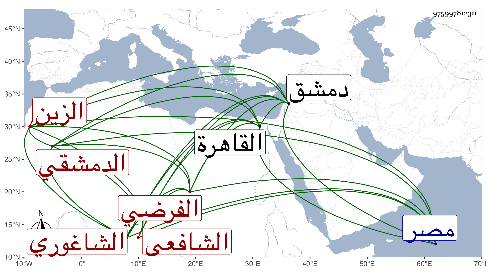

0902Sakhawi.DawLamic.ITO20230111-ara1.EIS1600.975997812311
Biography ID: 975997812311
445
عمر الزين الشاغوري الدمشقي الشافعي الفرضي . ممن تميز في الفرائض والحساب وأشير إليه بدمشق فيهما مع خير ومشاركة في الفضائل ، وولي قضاء الركب الشامي مرة وقدم القاهرة مع الشرف بن عيد حين طلب لقضاء الحنفية بمصر لمصاهرة بينهما بل ربما أخذ عنه ابن عيد في الفرائض والحساب . ومولده تقريبا سنة خمس عشرة وهو ممن حل عليه نظر التقي الحصني بحيث يحكى عنه ، وهو في سنة إحدى وتسعين في الأحياء .
